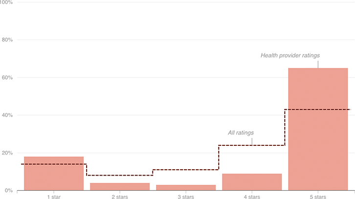

Yelp Reviewers More Likely To Leave Positive Reviews For Health Providers
An analysis of Yelp reviews shows that health providers, on the whole, fare better than other types of businesses reviewed.

Notes
Includes reviews from 2004 to June 2015. Figures may not add up to 100 percent because of rounding.